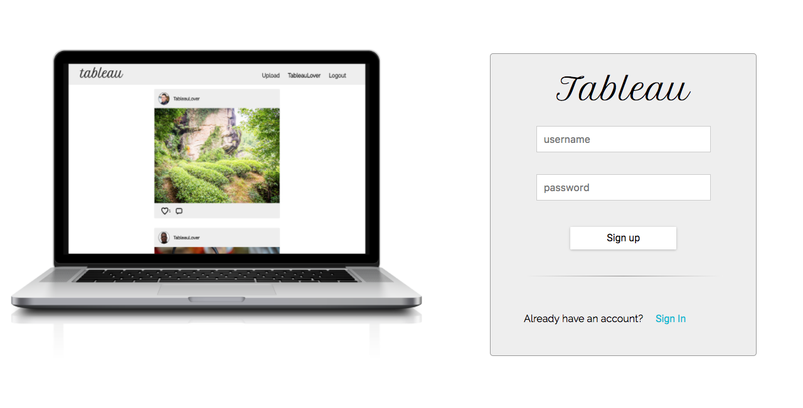
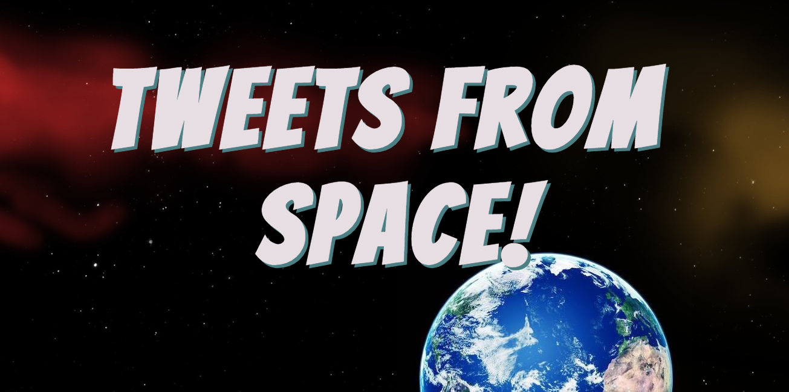

Tableau
For our final project, we cloned Instagram. We had 5 days to do it. One major takeaway for us was "Instagram was not built in 5 days". If we had more time we would improve functionality and build in cross-browser compatability. This app is best seen in a Chrome browser.

Authors: Yuval Allweil, Nicky Evers and Morgan Fogarty
Tweets From Space
We developed and styled this application from the ground up using the Twitter and Google Maps APIs. The idea behind SpaceTweets is to give users the ability to look up tweets by hashtag or screen name and plot them by location.

Authors: Morgan Fogarty, Grayson Meindl, Ivy Patton and Chris Wallace